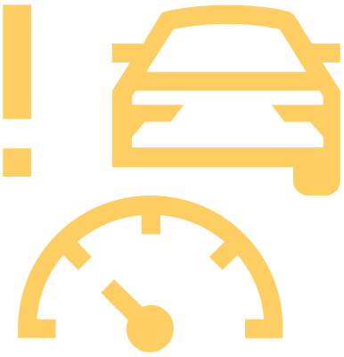

ACC pas disponible

brille avec


Nettoyer le capteur avant du radar.
Coupez et remettez le contact.
Si le système ACC n’est toujours pas disponible, vérifier les feux de freinage sur le véhicule ou sur la remorque attachée.
Si les feux de freinage fonctionnent et que le système ACC n’est toujours pas disponible, faire appel à un garage spécialisé.